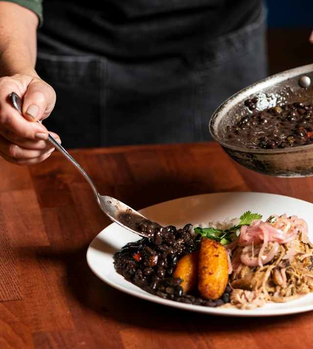

Black Beans

A traditional Cuban dish, black beans are a hearty and delicious meal. This dish can be frozen and reheated easily later and can be combined with rice or other grains for a quick and healthy meal. This recipe comes from my Mother and just a warning, the beans need to soak overnight.
Ingredients
- 1 lb dried black beans
- 1 large green pepper (quartered)
- 2 bay leaves
- oregano
- 1 med yellow onion (chopped)
- 4 cloves of garlic (minced)
- olive oil
- 1 dash of cumin
- salt and pepper
- 1/4 cup white vinegar
Steps
- rinse the beans
- soak the beans overnight
- simmer beans, green pepper, bay leaves, and oregano until beans are almost tender
- at the same time, saute onion and garlic in a generous amount of olive oil until the onions are soft and transulcent
- mix onion and garlic into the beans
- add cumin, salt, pepper
- simmer until beans are soft and thickened
- add vinegar
- salt and pepper to taste
- optionally mash some beans up to thicken more
Home